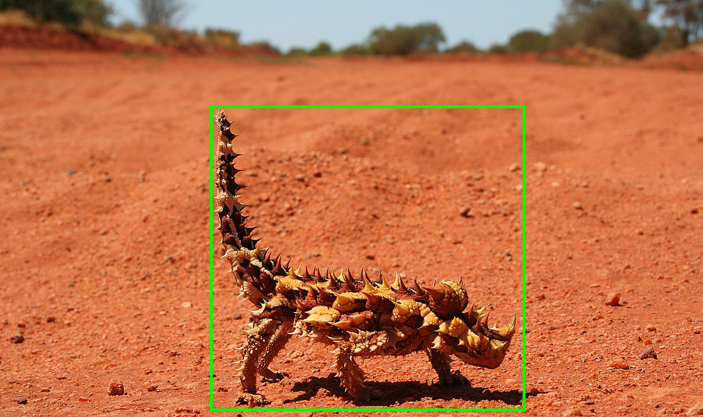
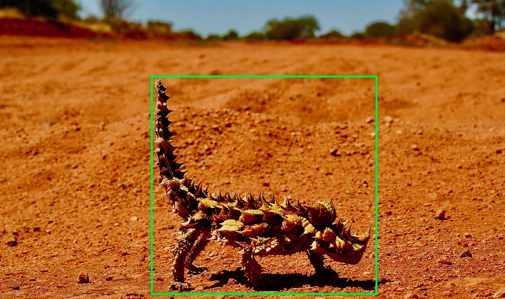
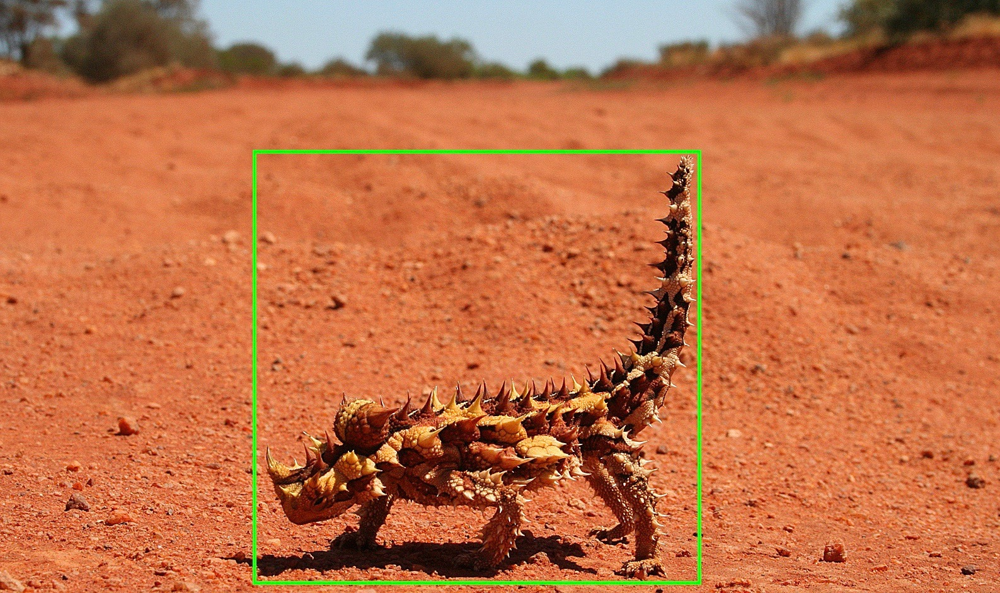

class: center, middle # Metamorphic tests --- ## Oracle Tests ```js expect(add(1, 1)).toEqual(2) ``` -- ## Generative Tests (aka Property based test) ```js forAll(a => { expect(add(a, 1)).toBeGreaterThan(a) }) ``` --- ## Metamorphic Tests Given: - `f` the function under test, - `x` and `x2` some inputs of `f` - `R` a relation beween `x` and `x2` Then there is a relation between `f(x)` and `f(x2)` -- Example ```js forAll( (a, b) => { expect(add(a, b)).toBeEqual(add(b, a)) }) ``` --- ## Some real use cases - Image recognition  - the bounding box stays the same if the colors changes <br />  - the bounding box is mirrored if the image is mirrored <br />  --- ## Some real use cases - Querying (e.g. API) - result of filtered query is a subset of the result of a query without filter - sorting the results should not change the elements returned --- ## Some real use cases - Mathematical properties - reflexivity: `f(a, b) === f(b, a)` - idempotence: `f(f(a)) === f(a)` - associativity: `f(f(a, b), c) === f(a, f(b, c))` --- ## Conclusion - Metamorphic Tests Calling multiple time the system under test to compare the results may sometimes gives useful insights!